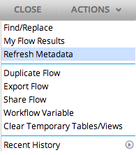
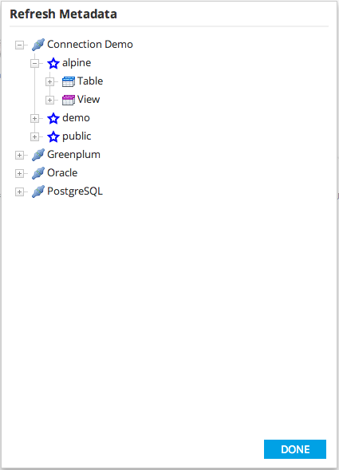

Refresh Metadata
Refresh Metadata allows the user to manually refresh the metadata for a database connection.
To view the Refresh Metadata dialog, select 'Refresh Metadata' from the Actions drop-down menu.

- Right-click a connection and choose refresh to reload the metadata of the next level of the tree.
- Expand the tree to view more specific components of the connection.
- Right-click and choose refresh on child nodes to refresh the metadata for specific components (e.g. all tables, a specific table, etc.)
